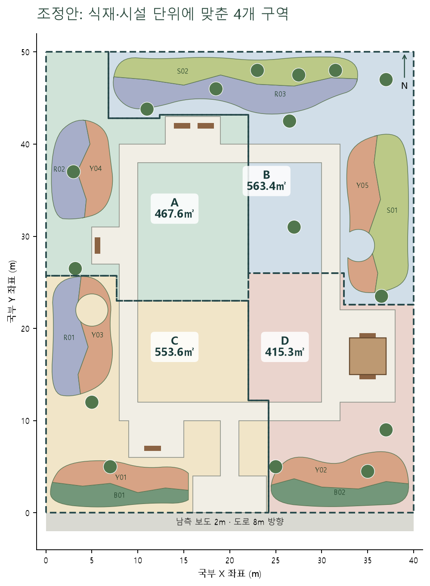

WORK ZONES / IFC 4.3 / R2 REVIEW
같은 면적보다
함께 시공할 대상을 기준으로
관목 군락, 수목 하부, 진입 포장과 휴게시설을 가르지 않도록 4개 공구의 경계를 조정했다. 설계 객체의 위치와 전체 물량은 유지했다.
공구 구분 검토안 R2 · 여기서 공구는 시공계획의 관리 구역이다. 4개는 비교를 위해 유지한 연구 매개변수이며, 법정 또는 KCS 의무 개수가 아니다. 기존 IFC 작업시간·강화학습 결과는 R1 경계 기준으로, 새 경계의 공기는 아직 계산하지 않았다.
01 / BOUNDARIES
관목 군락 12개를 온전하게 유지
기존의 x=20m·y=25m 경계는 관목 군락 6개를 나누었다. 북측 군락은 B공구에, 서측 남쪽 군락은 C공구에 묶고, 동측 군락과 퍼걸러 포장 사이로 경계를 옮겼다. 남측 진입 포장은 C공구가 맡는다.

| 공구 | 면적 | 교목 | 관목 | 휴게시설 | 평떼 | 블록포장 |
|---|---|---|---|---|---|---|
| A · 서측 벤치·식재 | 467.61㎡ | 2주 | 63주 | 벤치 3 / 퍼걸러 0 | 307.45㎡ | 88.00㎡ |
| B · 북측·동측 식재 | 563.44㎡ | 9주 | 301주 | 벤치 0 / 퍼걸러 0 | 278.29㎡ | 44.00㎡ |
| C · 남서 진입·식재 | 553.63㎡ | 2주 | 181주 | 벤치 1 / 퍼걸러 0 | 289.06㎡ | 122.40㎡ |
| D · 동남 휴게·시설 | 415.32㎡ | 3주 | 132주 | 벤치 2 / 퍼걸러 1 | 227.18㎡ | 103.60㎡ |
합계2,000㎡ · 교목16주 · 관목677주 · 벤치6개 · 퍼걸러1개. 모든 공구가 연결된 단일 영역이며 중복·누락 면적은0㎡다. 수목 하부16개와 진입·휴게 포켓5개가 한 공구에 속하는지 확인했다.
기존·조정안 나란히 보기 ↗02 / SECTIONING RULES
공구를 나누는 판단 순서
먼저 완결된 설계 단위와 시공계통을 유지하고, 다음으로 접근·이음·검측 조건을 확인한다. 마지막으로 직종별 물량과 작업시간을 비교한다. 이 순서는 본 연구의 구분 규칙이며 국가 시방에 정해진 공구 분할 규정이라는 뜻은 아니다.
- 관목 군락의 완결성
식재 설계의 군락 단위를 경계로 나누지 않는다. 경계 후보는 군락 사이 빈 공간을 이용한다.
12개 군락 각각 단일 공구에 포함 - 수목·시설물 작업 단위
수목 하부 영역, 퍼걸러 및 해당 휴게 포장, 진입 포장은 한 작업 단위로 묶는다.
수목 하부 반경0.75m 16개 및 포장 포켓5개 분할0; 0.75m는 설계 영역이며 장비 안전반경이 아님 - 전 부지·연결계통 작업 유지
표토·부지정지, 집수정·우수관 관저고 조정, 경계석 일괄 설치는 공구 개수만으로 분할하지 않는다.
부지정지·배수는 기존 SITE 작업. 경계석 일괄안은 다음 공정 판본에 통일 필요 - 공구 경계의 공간 일관성
4개 관리 공구는 부지 안에서 서로 겹치지 않고 틈 없이 전체를 덮는 연결된 영역으로 만든다.
합계2000㎡, 중복0㎡, 누락0㎡, 분리된 조각0 - 반입·장비 동선
진입구와 공유 운반로는 별도 공용 자원으로 관리한다. 공구가 다르다는 이유만으로 병행을 허용하지 않는다.
보행로2m 유지; 장비 폭·회전·적치·안전거리 검증은 별도 필요 - 포장 이음·검측 단위
벤치·퍼걸러 포켓은 통째로 유지하고, 포장 경계를 지나는 공구선은 블록 모듈과 시공 이음을 고려한다.
200mm 모듈을 고려한 횡단 위치; 최종 줄눈·검측 상세는 미확정 - 물량과 작업량 재배분
개체는 개수로, 면적 작업은 실제 교차 면적으로 산정한다. 면적을 동일하게 맞추지 않으며 직종별 작업시간과 병목을 함께 본다.
16교목·677관목·6벤치·1퍼걸러 및 잔디·포장 총량 보존 - 관리 공구와 실제 작업면 구분
A~D는 관리 단위다. 북측·동측처럼 큰 공구는 관목 군락·포장 구간을 세부 작업면으로 정의하고 작업반을 배정한다.
군락12개를 세부 작업면 후보로 기록. 병행 행동의 작업면 단위 구현은 후속
03 / WORKLOAD
관리 공구와 실제 작업면을 구분한다
B공구는 면적보다 식재 작업량이 크다. 북측과 동측 군락을 세부 작업면으로 관리해야 작업반의 동시 투입을 합리적으로 판단할 수 있다. A~D만을 독점 자원으로 삼으면 서로 떨어진 작업도 불필요하게 기다릴 수 있다.
| 공구 | 교목 작업조 시간 | 관목 작업조 시간 | 평떼 작업조 시간 |
|---|---|---|---|
| A | 1.03h | 6.72h | 16.40h |
| B | 4.50h | 32.11h | 14.84h |
| C | 1.33h | 15.85h | 15.42h |
| D | 1.70h | 9.81h | 12.12h |
표준품셈에 연결한 기존 규격별 작업조 생산성으로 구역 물량을 다시 합산한 순수 작업시간이다. 같은 직종의 공유 인원, 선후행, 장비, 양생, 강우·주말을 반영한 공기가 아니다. 이 표를 더하거나 가장 큰 값만 취해 준공일로 사용하지 않는다.
병행 가능 여부는 작업면의 겹침 + 장비 작업영역 + 공유 반입로 + 자원 + 선행검측으로 판정한다. 같은 공구 안에서도 서로 분리된 작업면이면 검토할 수 있고, 다른 공구라도 운반로를 공유하면 대기할 수 있다. 현재 사건 시뮬레이터의 공구 독점 규칙을 이 작업면 기준으로 바꾸는 것은 후속 구현 항목이다.
04 / IFC OBJECT MAPPING
객체·공구·작업은 서로 다른 정보다
함께 만든 조경 IFC 4.3 객체 대응표와 공간·관계 설명을 참고하고, 실제 IFC4X3_ADD2 스키마의 허용 엔티티·열거값을 대조했다.
| 설계 대상 | IFC 엔티티 | PredefinedType | 객체 수 | 추가 구분 |
|---|---|---|---|---|
| 기존 R1 공구 참조 | IfcSpatialZone | CONSTRUCTION | 4 | zone |
| 보행로 포장 | IfcPavement | FLEXIBLE | 4 | PAVING_WALKWAY |
| 진입·휴게 포장 | IfcPavement | FLEXIBLE | 3 | PAVING_POCKET |
| 잔디 | IfcGeographicElement | VEGETATION | 4 | LAWN |
| 관목 식재면 | IfcGeographicElement | VEGETATION | 4 | SHRUB_BED_AREA |
| 수목 하부 멀칭 | IfcCovering | USERDEFINED | 4 | MULCH |
| 교목 | IfcGeographicElement | VEGETATION | 16 | TREE |
| 개별 관목 | IfcGeographicElement | VEGETATION | 677 | SHRUB_INDIVIDUAL |
| 벤치 | IfcFurniture | USERDEFINED | 6 | BENCH |
| 퍼걸러 | IfcElementAssembly | USERDEFINED | 1 | PERGOLA |
| 우수관 | IfcPipeSegment | RIGIDSEGMENT | 4 | STORMWATER_PIPE |
| 집수정 | IfcDistributionChamberElement | SUMP | 4 | CATCH_BASIN |
| 화강석 경계석 | IfcKerb | USERDEFINED | 4 | GRANITE_KERB |
| 임시 접근로 참조 | IfcBuildingElementProxy | USERDEFINED | 5 | access |
| 지형 | IfcGeographicElement | TERRAIN | 1 | TERRAIN |
| 주변 보도 참조 | IfcBuildingElementProxy | USERDEFINED | 1 | context_sidewalk |
| 주변 도로 참조 | IfcBuildingElementProxy | USERDEFINED | 1 | context_road |
| 제안 R2 공구 | IfcSpatialZone | CONSTRUCTION | 4 | WORK_ZONE_R2 |
교목·관목693개는 기존에도 타입 연결을 통해 VEGETATION을 상속했다. 검토본에서는 개별 객체에도 같은 값을 명시했다. 교목·관목·잔디의 세부 구분은 사용자 속성 Landscape_ObjectClass.Category에 기록한다. TREE, SHRUB_INDIVIDUAL, LAWN 등은 프로젝트 분류이며 IFC 표준 열거값이 아니다.
관목 식재면4개는 면적을 표현하고, 실제 관목 수량은 개별677개에서 센다. 둘을 합쳐 관목 개수를 늘리지 않는다. 식생이 아닌 멀칭은 IfcCovering / USERDEFINED에 ObjectType=MULCH로 구분했다. 퍼걸러는 조립 시설로 관리해 IfcElementAssembly / USERDEFINED와 ObjectType=PERGOLA를 적용했다. 이 두 세부 매핑은 프로젝트 선택이며 표준에 같은 이름의 열거값이 있다는 뜻은 아니다.
시공 공구는 IfcSpatialZone / CONSTRUCTION으로 표현하고, 설계 객체를 IfcRelReferencedInSpatialStructure로 참조한다. 주 공간 소속을 여러 곳으로 복제하지 않는다. 시공 작업은 기존 IfcTask, 작업 분류는 WBS, 시방 참조는 KCS로 구분한다. 새 공구가 여러 기존 포장 객체를 가로지를 때에는 해당 객체가 복수 공구를 참조할 수 있다. 참조 관계만으로 물량이 분할되는 것은 아니므로 교차 면적을 별도로 계산했다.
검토 IFC에는 기존 R1 참조 공구4개 + 제안 R2 공구4개를 구분해 담았다. 원본743개 객체의 GUID·형상·배치·물량과92개 IfcTask의 시간은 보존했다. 제안 공구에는 PROPOSED_NOT_SCHEDULED, ScheduleApplies=False를 기록했다. 새 공구가 기존 일정에 적용됐다고 해석하지 않는다.
재열기 및 EXPRESS 스키마 검사: 오류0개. 스키마 통과는 현장 시공성이나 모든 프로그램의 교환 호환성을 보증하지 않는다.
05 / REVIEW FILES
공구 검토안과 객체 분류 내려받기
QGIS ZIP을 풀고 QGZ를 열면 새 공구, 기존 공구 비교 레이어, 식재·시설 및747개 IFC 분류 대장을 확인할 수 있다. 좌표는 실측 위치가 없는 국부 미터 좌표다.
다음 공정 판본에서는 경계석 일괄 작업 기준과 세부 작업면을 통일한 뒤 WBS 물량·자원 제약·공정시간을 재계산해야 한다. 기존 학습 성과를 새 경계의 성과로 옮겨 적지 않는다.